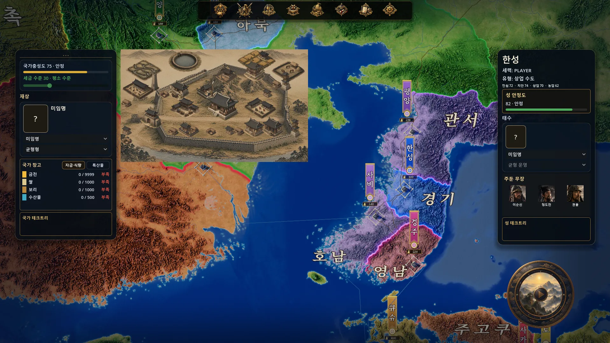
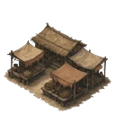
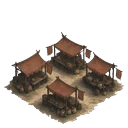
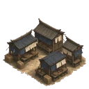
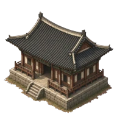
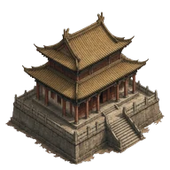
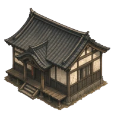
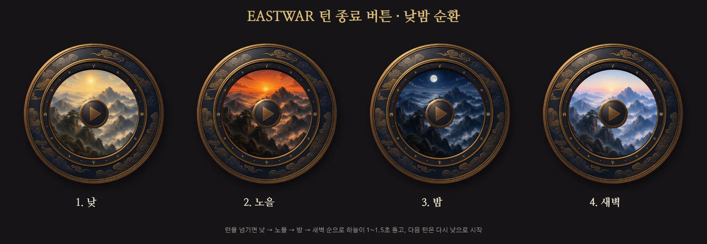

월드맵 위에 살아나는 도시들
한·중·일 건물과 성 발전 HUD, 낮밤 턴 버튼을 만들다
3D 월드맵 위에 성이 자리 잡고 나니, 이제 그 안에서 도시가 어떻게 발전하는지도 보여 주고 싶었다. 지도에서 성의 위치를 확인하는 것에 더해, 내가 키우는 도시의 모습을 한눈에 볼 수 있도록 말이다.
이번 작업의 중심은 바로 그 모습을 담는 성 발전 HUD 창이다. HUD는 게임을 하면서 필요한 정보를 보여 주는 화면 요소를 뜻한다. EASTWAR에는 도시의 발전상을 눈으로 확인할 수 있는 작은 창을 달아 주었다.
지도 위에서 성 안을 들여다보다
성 아이콘을 누르면 성 내부를 보여 주는 창이 열리는 방식이다. 이 창은 3D 월드맵 카메라와 별개로 움직이는 고정 2.5D 화면으로 잡았다. 입체감 있는 도시 모습을 보여 주면서도, 지도를 돌리거나 움직일 때 함께 돌아가지 않도록 하는 구성이다.
창은 화면 왼쪽에 작게 두기로 했다. 지금 비어 있는 몽골 지역 위에 배치해 지도와 도시의 모습을 함께 볼 수 있게 하려는 선택이다.
도시 화면을 위한 샘플 다섯 곳을 승인했고, 한성·평양·건업·에도·교토에는 한·중·일 건물 세트를 배치했다. 이번에 보여 주는 시장과 관청 그림에서도 나라별 모습이 다르다. 도시를 들여다봤을 때 어느 문화권의 성인지 알아볼 수 있도록 만드는 재료들이다.














그림을 바꿀 때마다 코드를 고치지 않도록
도시 HUD 작업에서는 일곱 가지 결정 사항을 추천안대로 승인했다. 그중 중요한 부분은 건물을 어디에 놓을지, 어느 점을 기준으로 맞출지, 무엇을 앞에 그릴지를 데이터로 나누어 둔 것이다.
쉽게 말하면 도시 그림의 배치 설명서를 따로 만든 셈이다. 건물 그림을 교체할 때마다 프로그램 코드를 다시 고치지 않아도 되도록 구조를 잡았다. 앞으로 성의 모습을 다듬어 갈 때도 이 기준을 활용하게 된다.
다만 모든 지역의 재료가 갖춰진 것은 아니다. 카라코룸은 아직 임시 격자로 남아 있다. 게르와 목책, 초원으로 이루어진 몽골 건물 세트는 다음에 꼭 채워야 할 작업이다. 성 내부 창과 기술 트리를 연결하는 일도 정해 둔 작업 순서에 포함돼 있다.
작업 역할도 나누었다. 록비서는 맵 굽기와 HUD 관련 패치·문서를, 클코치는 검수와 작업 지시를, 클로드 코드는 적용과 F6 테스트를 맡는 방식이다. 도시 HUD에서 확정한 내용은 내가 클코치에게 직접 전달했다.
턴을 넘기면 작은 하늘이 한 바퀴
성 발전 HUD와 함께 손본 것은 턴 종료 버튼이다. 옛 나침반 모양을 원형 하늘 창으로 바꾸었다. 금테 안에 남색 구름 띠를 두르고, 둘레에는 전통적인 열두 시간 구분인 12지 시각 링을 넣었다. 子는 위에, 午는 아래에 두고, 子·卯·午·酉 네 글자를 크게 표시했다.
턴을 넘길 때는 버튼 안의 하늘이 해, 노을, 달, 새벽 순서로 바뀐다. 약 1~1.5초 동안 한 바퀴를 돌고 다음 턴에는 다시 낮으로 돌아오는 연출이다. 작은 버튼 안에서 시간이 흐르는 느낌을 담았다.


클릭할 수 있는 곳은 원형 창 전체다. 별도의 ‘턴 종료’ 글자판은 없애고, 마우스를 올렸을 때만 설명이 뜨는 툴팁으로 안내한다.
내부에서는 기존 TurnEndCompass의 겉모습만 바꾸었다. 새 노드를 만들지 않고, 버튼이 클릭됐다는 신호인 시그널과 대기 로직은 그대로 유지했다. 겉모습을 다듬으면서 기존 동작 구조를 보존한 것이다.
실제 게임에서 사용할 이미지도 512px 세트로 정했다. 작업 기록상 이 세트의 메모리 사용량은 약 25MB에서 6.3MB로 줄었다. 게임 전체 메모리가 아니라 턴 버튼 이미지 세트에 해당하는 수치다.
이제 주변 화면도 함께 다듬을 차례
턴 버튼을 손보고 나니 다음 목표도 정해졌다. 초기 기능 확인용인 MVP 단계에서 만든 월드맵 HUD 전체를 새 버튼의 품질에 맞춰 다듬기로 했다.
점검할 곳은 여섯 군데다. 위쪽 메뉴 아이콘, 왼쪽 국가 패널, 성 미리보기, 오른쪽 성 패널, 지도 위 성 깃발, 그리고 턴 버튼이다. 화면 배치와 정보 구조는 유지하면서 테두리, 재질, 글꼴, 아이콘의 질감을 끌어올릴 계획이다.
패널 시안을 먼저 만들고, 메뉴 아이콘과 성 미리보기 테두리, 지도 깃발을 차례로 다듬은 뒤 클코치에게 전달할 지시문으로 정리하기로 했다. 좌우 패널 전체를 금테와 남색으로 맞출지, 기존의 어두운 패널을 두고 포인트만 맞출지는 아직 결정하지 않았다.
이번에는 도시의 발전상을 담을 창을 달고, 턴을 넘기는 버튼에도 EASTWAR의 모습을 더했다. 몽골 건물 세트와 화면 전체의 디자인처럼 남은 작업도 분명하다. 이제 그 부분들을 하나씩 채우며, 지도 위의 성을 더 자세히 들여다볼 수 있는 화면으로 다듬어 가려 한다.